Autorzy:
Kamil Ślesiński,
Radosław Stankiewicz
Cel projektu:
Implementacja kompresji fraktalnej na podstawie publikacji "Image compression using recurrent bivariate fractal interpolation surfaces" autorstwa P.Bouboulis, L.Dalla i V.Drakopoulos (adres publikacji).
Implementacja:
Projekt został zaimplementowany w języku C#.NET i kod źródłowy można pobrać stąd. Implementacja nieznacznie odbiega od publikacji. Różnice dotyczą m.in. formatu danych służących do kompresowania i dekompresowania obrazów oraz pewnych zmian w samym algorytmie kompresji.
Testy:
Przeprowadziliśmy testy dla paru przykładowych obrazków. Testy można zobaczyć w tabeli poniżej.
|
Parametry [Eps,EpsHij,Delta,delta,dMax] |
Obraz Źródłowy | Obraz Wyściowy |
|---|---|---|
| 32,8,32,16,5 | 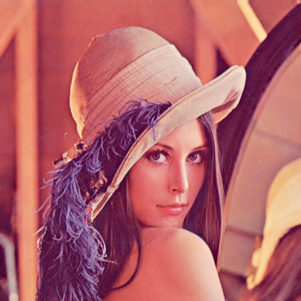 | 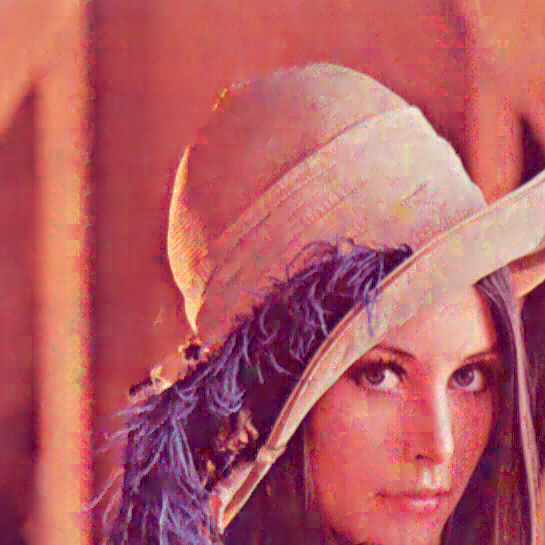 |
| 32,8,32,16,5 | 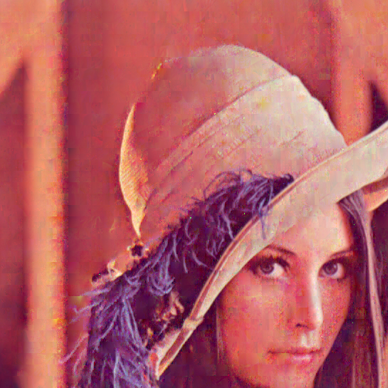 | |
| 32,8,32,16,4 | 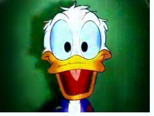 | |
| 32,8,32,16,5 | ||
| 32,8,64,32,6 | ||
| 10,6,64,32,1 | 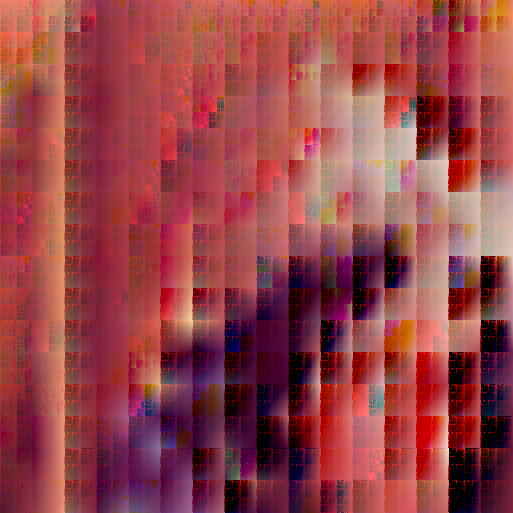 | |
| 1,2,64,32,4 | 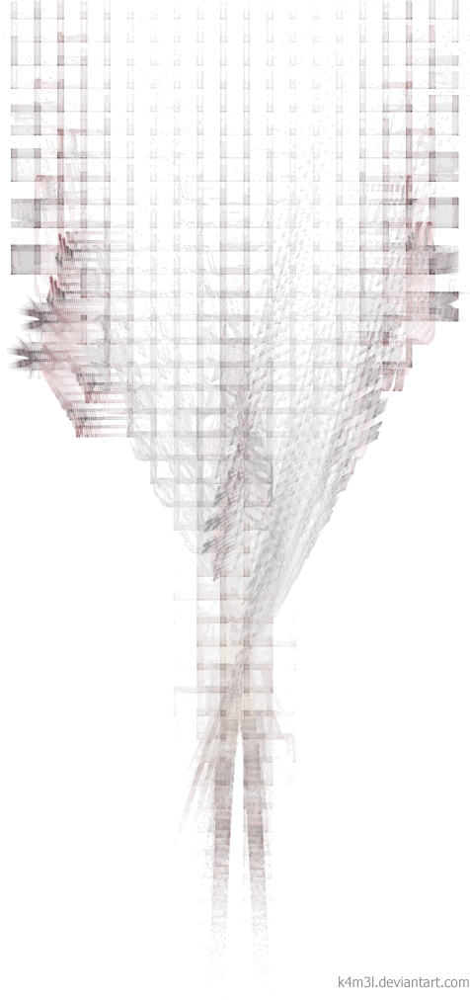 | 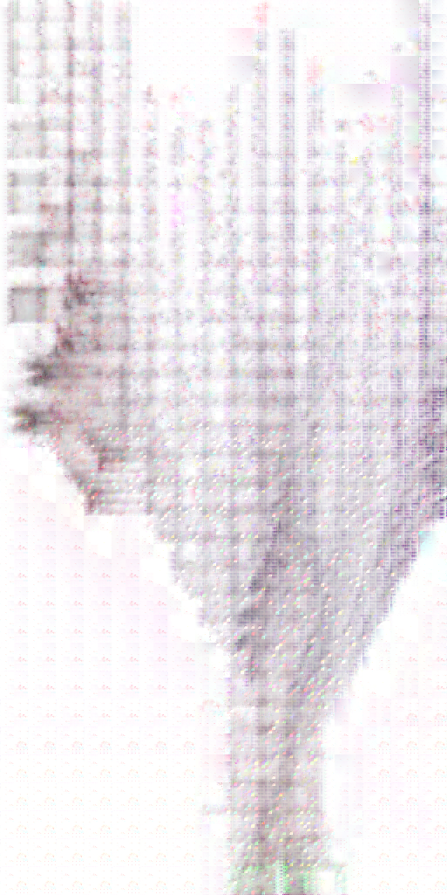 |
| 1,2,128,64,6 | 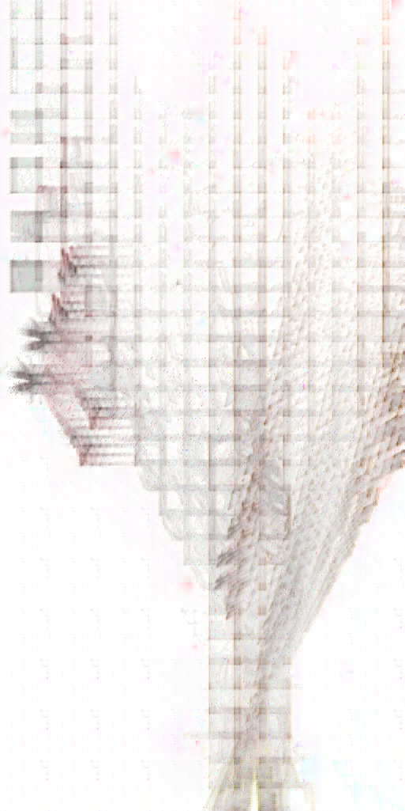 | |
| 32,8,32,16,5 | 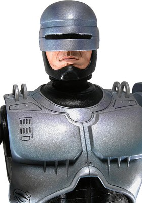 | 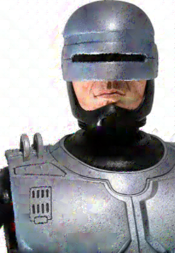 |
| 32,8,32,16,5 | 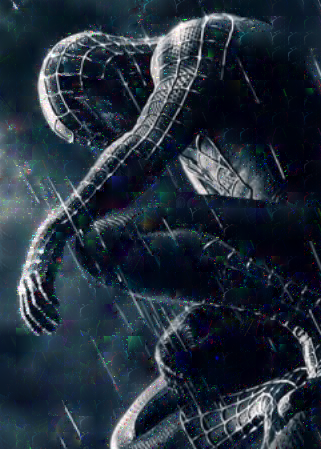 | |